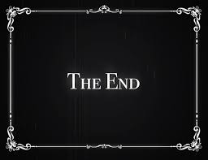

¿Que es el cine?
El cine (abreviatura de cinematógrafo o cinematografía) es la técnica y el arte de crear y proyectar metrajes (como se conocía a las películas en sus inicios). Etimológicamente, la palabra «cinematografía» fue un neologismo creado a finales del siglo xix y compuesto a partir de dos palabras griegas: por un lado kiné, que significa «movimiento» (ver, entre otras, «cinético», «cinética», «kinesis», «cineteca»); y por otro γραφóς (grafos). Con ello se intentaba definir el concepto de «Imagen en movimiento».
¿En que consiste una pelicula?
Una película, también llamado filme, es una serie de imágenes fijas que, cuando se proyectan en una pantalla de forma consecutiva en rápida sucesión, crean la ilusión óptica de imágenes en movimiento.